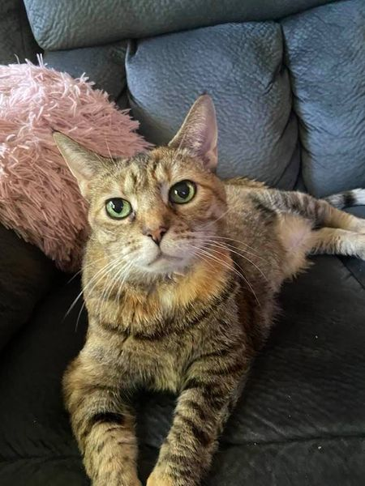
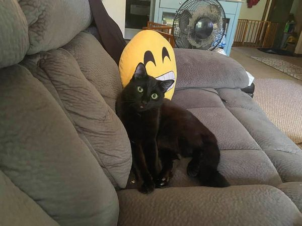
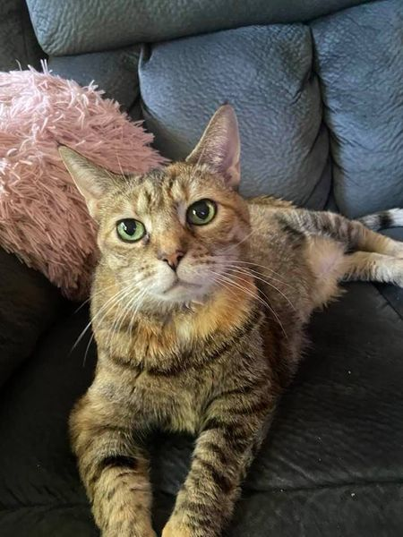
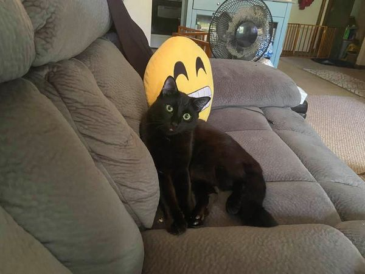
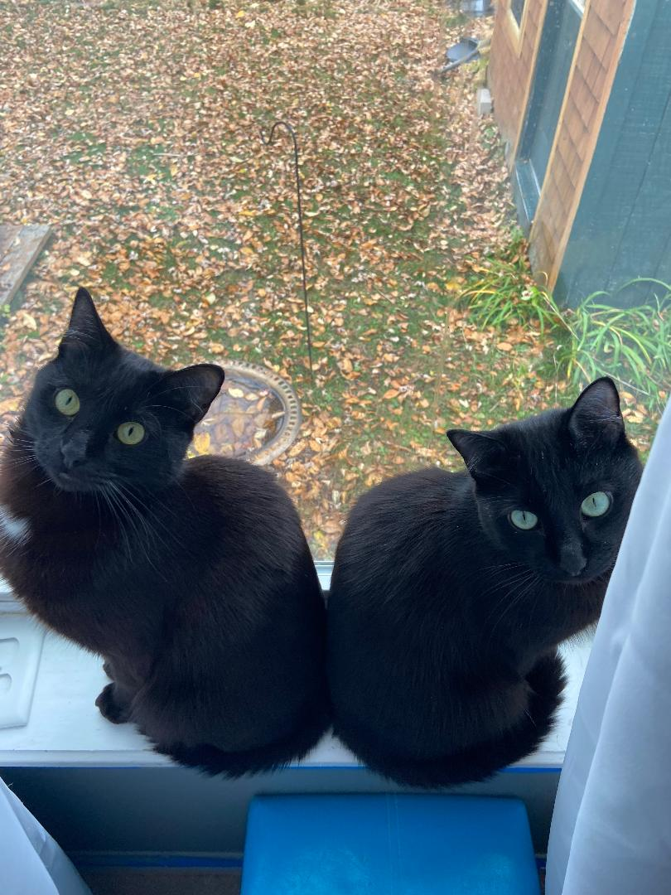
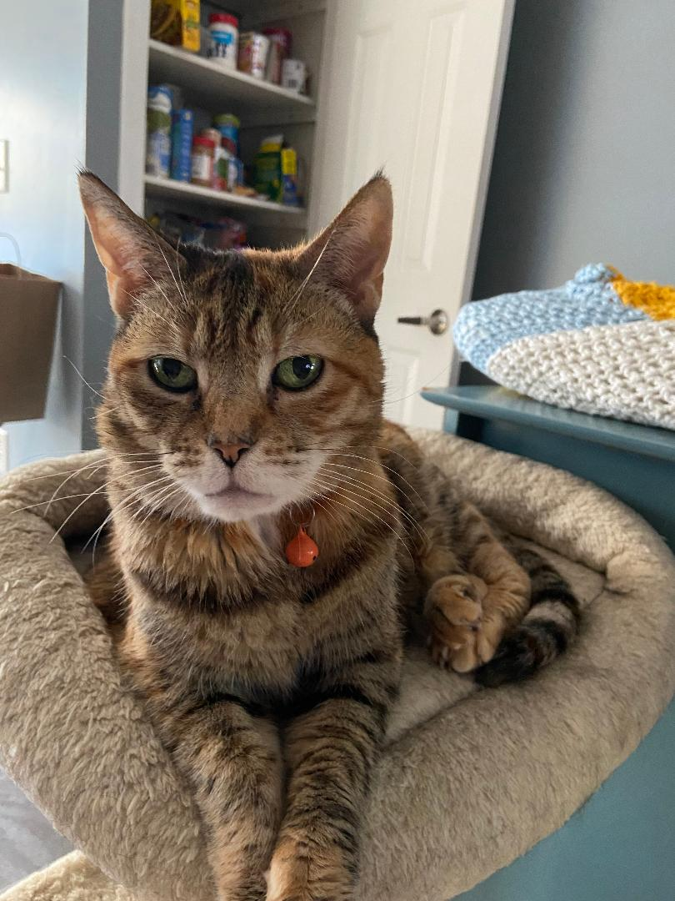

Let me tell you about my three cats, the three joys of my life. My oldest cat is Mylie who is about 17 years old. She's an abyssinian tortie. I adopted her from a local shelter where she was highly stressed out. She is feisty, can be sweet, and is highly food motivated. She has always preferred to be the only pet and for many years I kept it that way until I rescued a family of semi feral cats living under my coworker's house. I found homes for each one but I decided the last two had to stay together. Since I completely fell in love with one particular fluff ball, named Pepe, I kept him and his playful and cute little brother, Ichi- who I also fell in love with. Pepe is all black(with red highlights) and Ichi is all black with a white dot on his chest. Mylie is now living in acceptance of Pepe and Ichi although she will hiss and swat if they get too close.
